01. Research
Desk research, benchmarking and surveys helped me understand the food delivery landscape and people’s ordering habits.
Additional project / No Hay Vida Sin Comida
I designed a mobile app concept that adapts to people's food preferences and ordering habits, from finding a restaurant to reviewing an order.
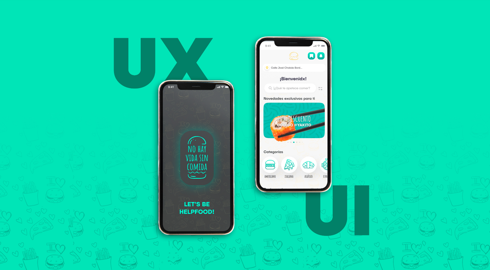
01 / User-centered design
I wanted to make ordering feel easy for people with different preferences, budgets and schedules. I followed a user-centered design process and built the prototype in Figma.
Desk research, benchmarking and surveys helped me understand the food delivery landscape and people’s ordering habits.
I translated the findings into personas, scenarios, journey maps and a Lean UX canvas.
I used card sorting and a treemap to organize the app, then moved from sketches and wireframes to a high-fidelity prototype.
I evaluated the prototype through heuristic review and user testing. The evaluation plan also included user analytics.
02 / Research
I used three personas to make different ordering needs concrete. Enrique orders with housemates, Pedro looks for food that suits his family, and Sara often orders for herself after work.
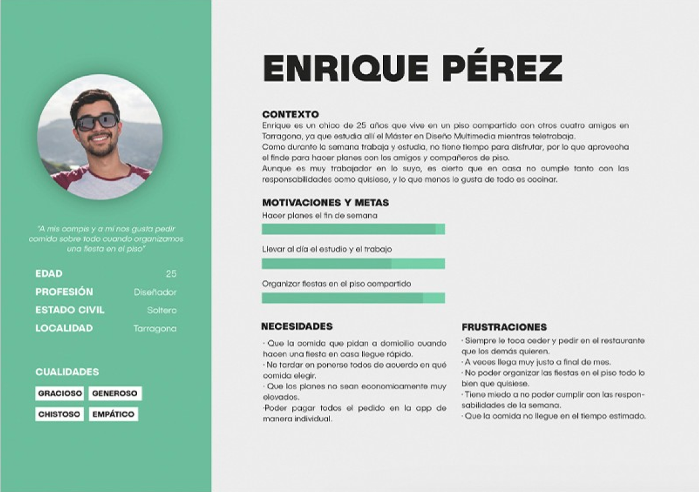
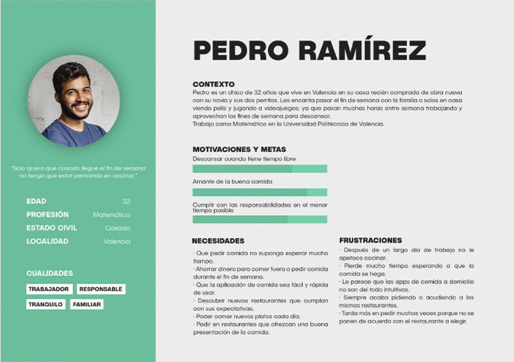
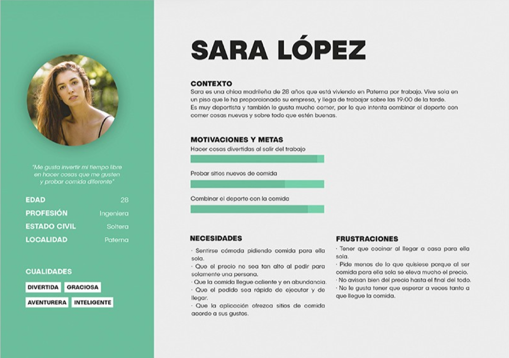
03 / Information architecture
I mapped the steps, pain points and emotions in each ordering scenario to see where the app could help. I also used card sorting to organize features around discovery, personalization, ordering and delivery.
Original card-sorting labels
Carrito de la compra · Programar pedido · Detalles del pedido · Menú personalizado · Recomendar · Carta personalizada · Restaurantes · Categorías de comida · Descuentos y promociones · Chat · Niveles de usuario · Métodos de pago · Ubicación
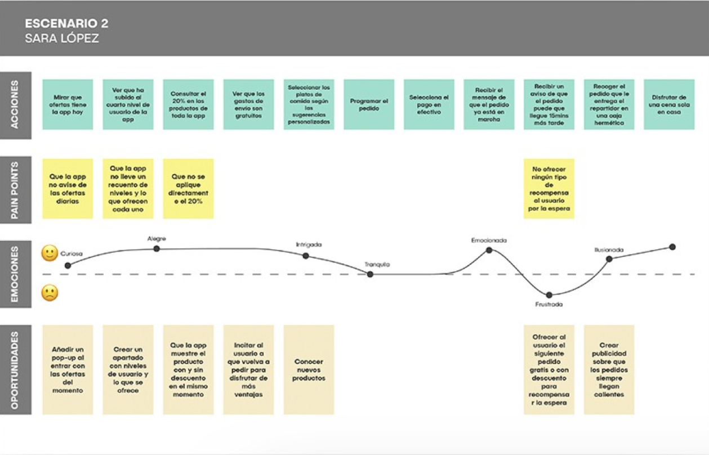
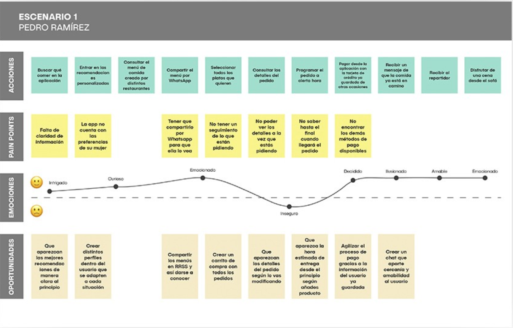
04 / Final screens
The prototype lets users ask for a recommendation or browse on their own. They can explore food categories, compare restaurants, choose dishes and review the cost of their order before paying.
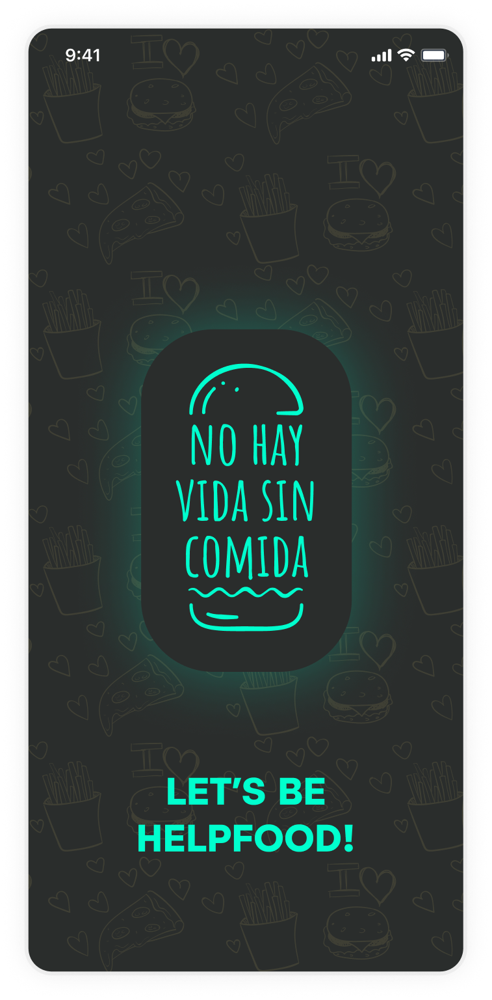
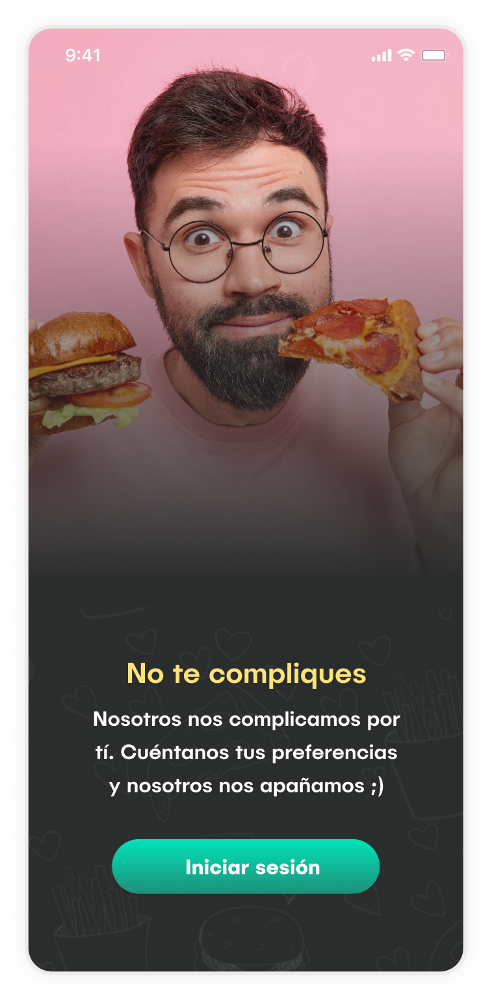
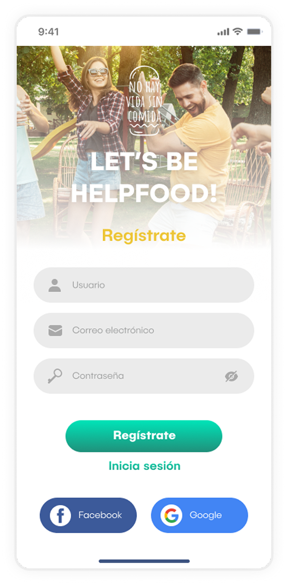
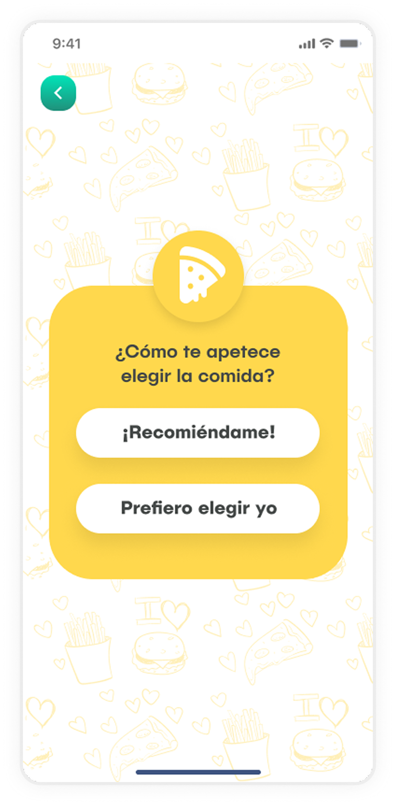
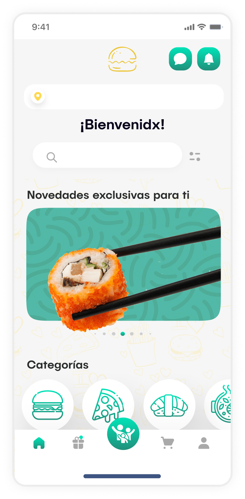
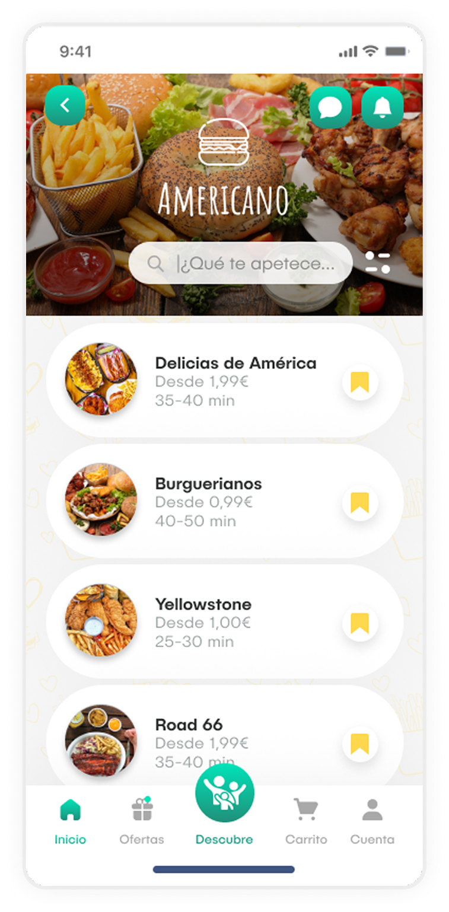
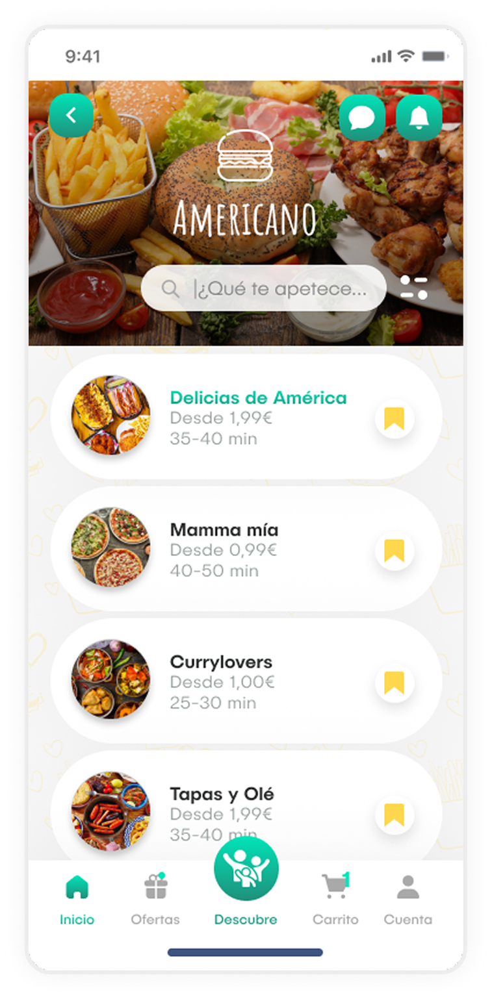
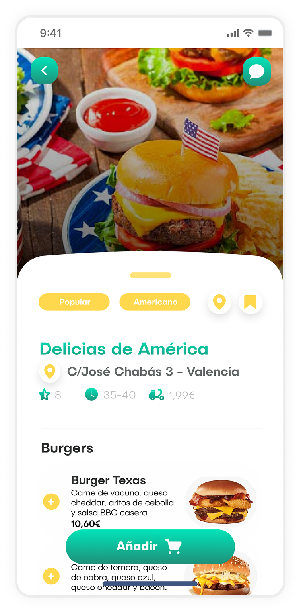
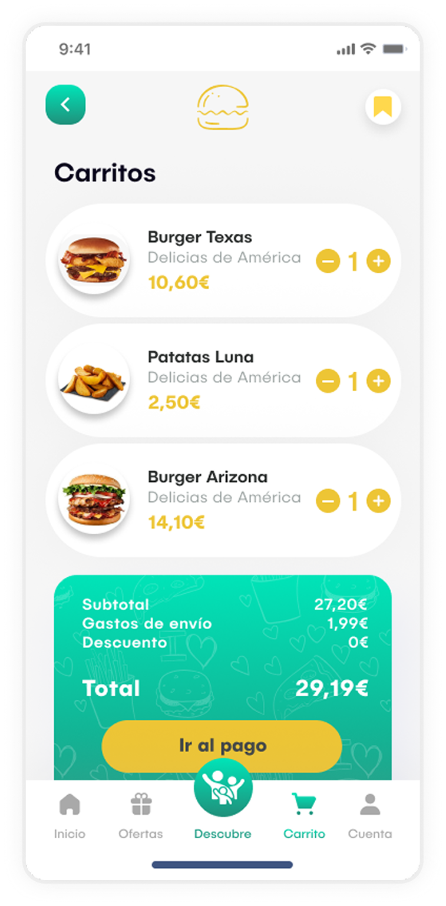